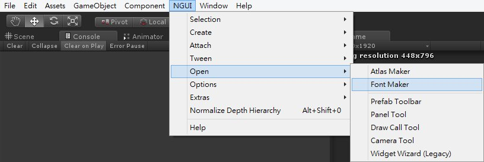
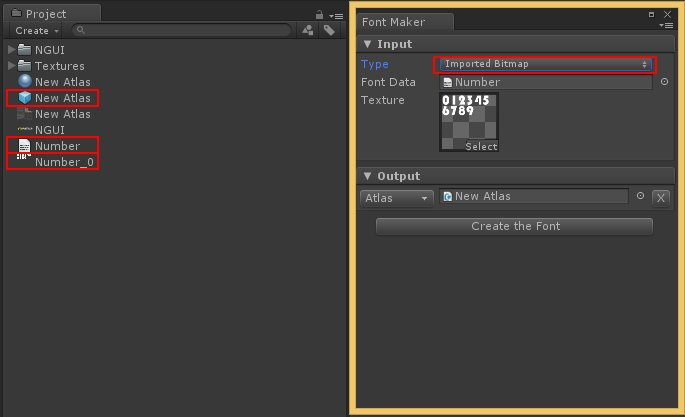
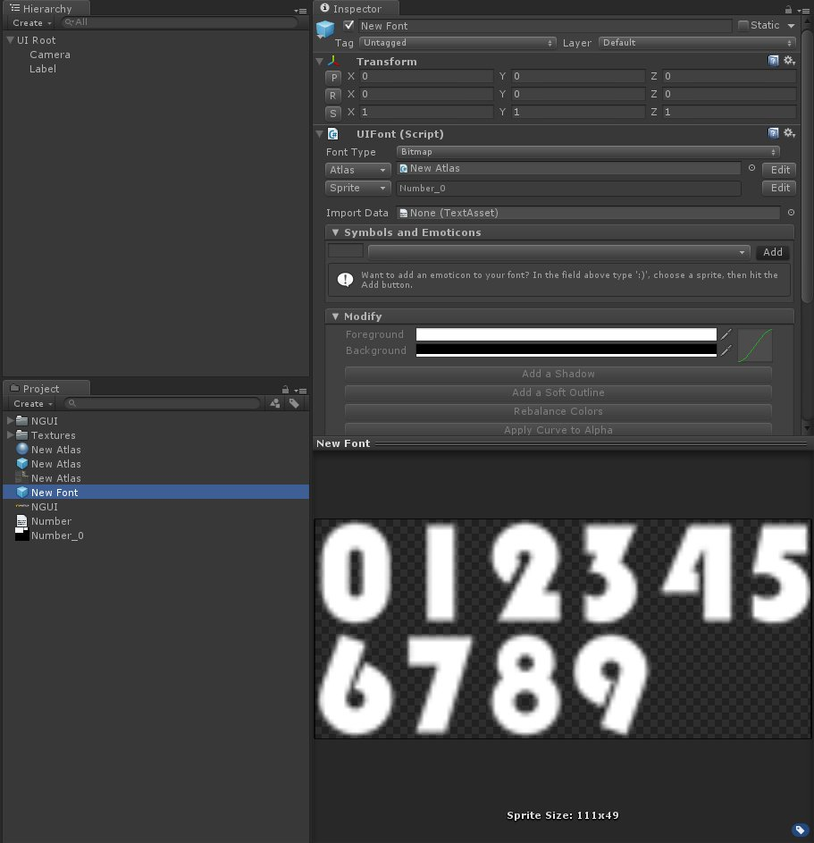
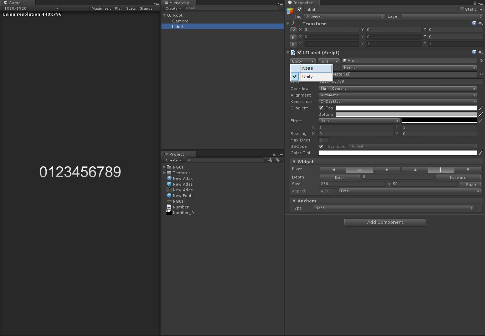
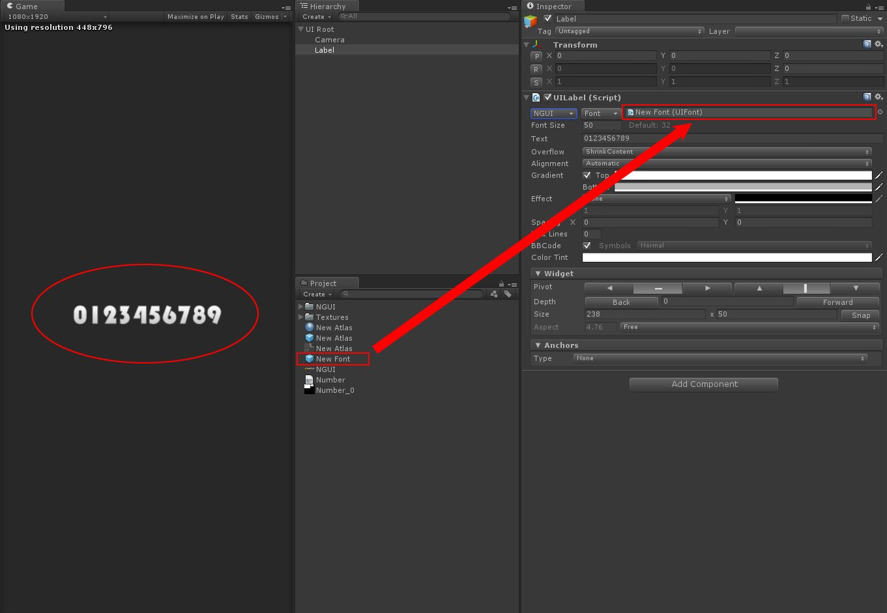

上一篇利用了 BMFont 這個工具
這一篇要利用 BMFont 所產生的檔案匯入 Unity 來做為自定義字型使用
建立自定義字型
將 BMFont 所產生的 .png 及 .fnt 匯入 Unity 專案中
點選 NGUI → Open → Font Maker

將 Type 調整為 Imported Bitmap
並分別將圖集、PNG 及 .fnt 放入對應位置

按下 Create the Font 按鈕後
即可產生出一個 UI Font 物件

回到 Hierarchy 中點選所產生的 Label
將 UI Label 腳本中的 Unity 切換為 NGUI
即可使用自定義的 UI Font 物件

